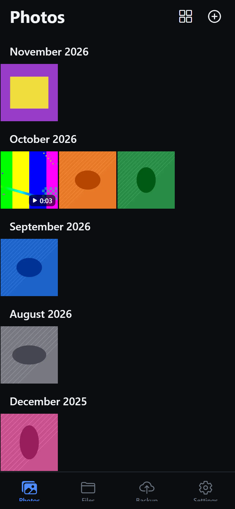
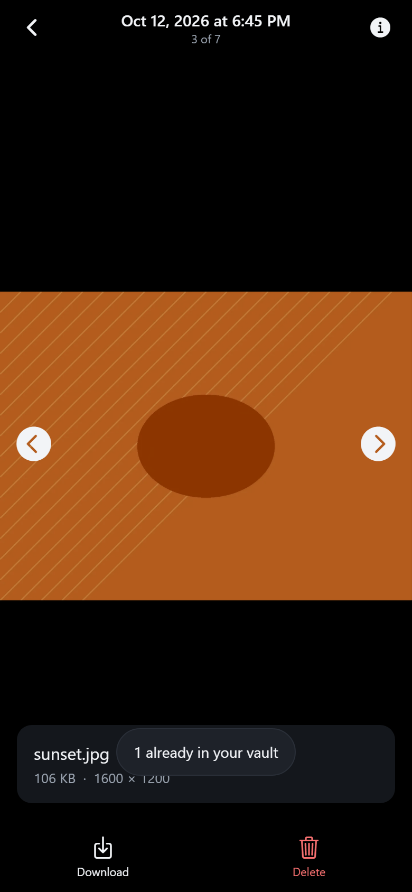
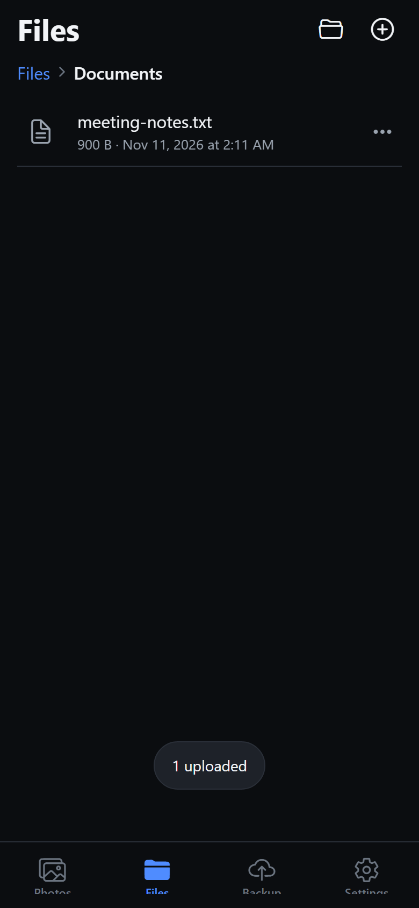

Self-hosted cloud · 2026
Self-hosted cloud · 2026
PiVault
My own replacement for iCloud Photos. It runs on a Raspberry Pi 5, and a custom iPhone app backs up the camera roll and lets me browse, upload and download from anywhere over Tailscale, with no ports open to the internet.
- FastAPI backend with a separate worker for thumbnails, HEIC and video, deduplicated by SHA-256.
- React Native (Expo) app: timeline, viewer, files, background backup.
- Three SSDs pooled with mergerfs plus SnapRAID parity, nightly encrypted restic backups and a monthly automated restore test.
- One SD-card image provisions the whole Pi with Ansible. Prometheus and Grafana for monitoring.
45backend tests
17end-to-end tests
1file to rebuild the Pi
PythonFastAPIPostgreSQLReact NativeDockerAnsibleGitHub Actions


